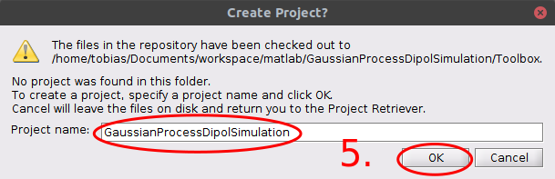
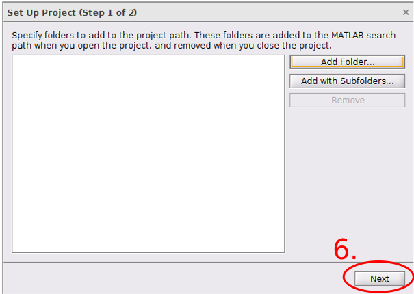
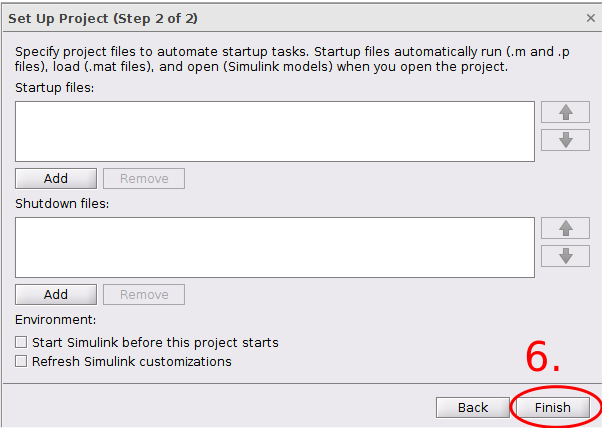
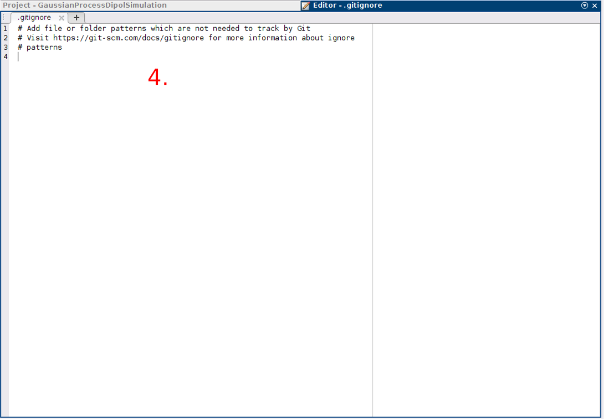
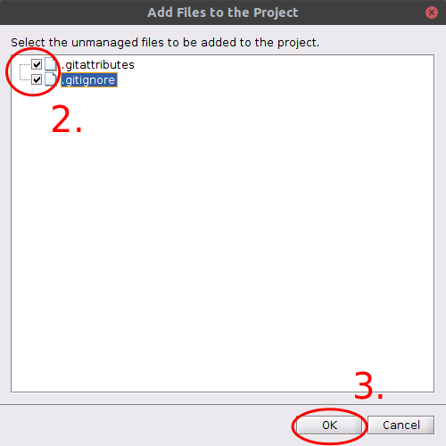

Project Preparation
The first steps to setup a scalable software project are none trival and need a good strcuture for later project expands. Either to setup further new projects a well known scalable project structure helps to combine different software parts to bigger environment packages. Therefore a project preparation flow needs to be documented. It unifies the outcome of software projects and part guarantee certain quality aspects.
The following steps can be used as guidance to establish a propper Matlab project structure in general. Each step is documented with screenshots to give a comprehensible explanation.
Contents
See Also
Create Main Project Directory
The main project directory contains only two subfolders. The first one is the Toolbox folder where the project, m-files and other project files like documentation are placed. The folder is also called sandbox folder in Matlab project creation flows which is just another description for a project folder where the coding takes place. The second folder is a hidden Git repository folder which keeps the versionation in final. It is respectively seen a remote repository that establish basics to setup backup plans via Git clone or can be laterly replaced by remote repository on a server or a GitHub repository to work in common on the project.
First step:
- Create an empty project folder, open Matlab navigate to folder path.
- Right click in the Current Folder pane and create New > Folder "Toolbox".
- Open a Git terminal and in the project directory and initialize an empty Git repository.

Create Matlab Project with Git Support
In second it is needed to create the Matlab project files in a certain way to get full Git support and support for the Matlab help browser environment. In this use case the before created local Git repository is used as remote origin. So several settings are automatacally made during the creation process by Matlab and as mentioned before the "local remote" repository can be replaced later by a remote origin located on a server or GitHub. The Toolbox folder must be empty to process the following steps.
It is recommend to do no further Git actions on the created Git repository via Git terminal!
These steps only proceed the project setup further Matlab framework functionality is added later.
Second step:
- In the created main project directory create a New > Project > From Git.
- Change the repository path to the hidden Git repository path in the main project directory.
- Change the sandbox path to the Toolbox path in the main project directory.
- Click Retrieve.
- Enter the project name given by the main project directory name and click OK.
- Click on Set Up Project and skip the two follwing steps via Next and Finish.
- Switch to Toolbox directory by double click on the folder in the Current Folder pane, open the created Matlab project file with a double click and check source control information under PROJECT tab by clicking Git Details.
- Add a short project summary by click on Details under the ENVIRONMENT section of the PROJECT tab.
- Click Apply.
- Click OK.
The project itself is under source control now.







Registrate Binaries to Git and Prepare Git Ignore Cases
The root of Git is to work as text file versioner. Source code files are just text files. So git versionates, tags and merges them in various ways in work flow process. That means git edits files. This point can be critical if git does edit a binary file and corrupts it, so that is not executable any more. Therefore binary files must be registrated to Git. Another good reason is to registrated binary or other none text files beccause Git performs no automatic merges on file if they are not known text files. To keep the versionating Git makes a taged copy of that file every time the file changed. That can be a very junk of memory and lets repository expands to wide.
To prevent Git for misshandling binaries it is able to regestrate them in a certain file and mark the file types how to handle them in progress. The file is called .gitattributes must be placed in the Git assinged working directory which is the sandbox folder for Matlab projects. The .gitattributes file itself is hidden.
Three options are needed to mark a file type as binary. The -crlf option disables end of line conversion and the -diff option in combination with the -merge option to mark the file as binary.
In addition to that it is possible to delclare several ignore cases to Git. So certain directories or file types are not touched or are left out from source control. This is done in .gitignore file. The must be placed in the sandbox folder too.
From the sandbox directory enter in the Matlab command prompt edit .gittatributes and edit .gitignore and save both files. The files are not shown in Current Folder pane (hidden files). Edit both files in the Matlab editor and save the files.
Third step:
- Add common Matlab file types to .gitattributes.
- Add Matlab compiler file types to .gitattributes.
- Add other file types which can be appear during the work to .gitattributes.
- Add ignore cases to .gitignore if needed.


Checkout Project State and Do an Initial Commit
The main part is done. It just needs a few further step to save the work and add the created files to the project.
Fourth step:
- Add created files to the project. In the PROJECT tab under TOOLS section click Run Checks > Add Files.
- Check the files to add to the project.
- Click OK.
- Right click in the white space of Current Folder pane and click Source Control > View and Commit Changes... and add commemt to the commit.
- Click Commit.
The project is now initialized.

Push to Remote and Backup
The project is ready to work with. Finally it needs a backup meachnism to save the done work after closing the Matlab session. Git and how the project is build up provide an easy way to make backups.
- Push the committed changes to remote repository.
- Insert a backup medium e.g. USB stick and open a git terminal there.
- Clone the project remote repository from project directory.
- Change the directory to cloned project.
- Check if everything was cloned.
- Check if the remote url fits to origin.
- Pull from remote to check if everything is up to date.
If further changes are comitted to the project push again to the remote from Matlab environment and repeat update the backup from time to time by inserting your medium and make a fresh pull. Change the directory to the folder and just pull again. See below as an example how does it look like.
Port Remote Repository to GitHub
The remote repository is ported to GitHub laterly. Therfore some minimal changes are made manually to the local repository.
- According to new rules on GitHub the master branch is renamed to main.
- Due to that a new upstream is set to origin/main from origin/master
- To fetch all casualties a merge was needed from origin/main on local main. The orign/master reference was included.
- Change remote repository to GitHub URL https://github.com/TobiasWulf/GuassianProcessDipolSimulation.git
- At the moment the GitHub repository is private and not visible in the web. After finishing the general work the repository will be set to publish in consultation with HAW TMR research project and team.
- After publish on GitHub, clone or fork to work with.
- The source code is hosted under MIT license.
- Use GitHub flows to clone or fork and push changes to backup done work.
- Toolbox folder is not needed anymore because remote is elswhere now
- Re clone from remote to get new structurew without Toolbox folder
Created on September 30. 2020 by Tobias Wulf. Copyright Tobias Wulf 2020.